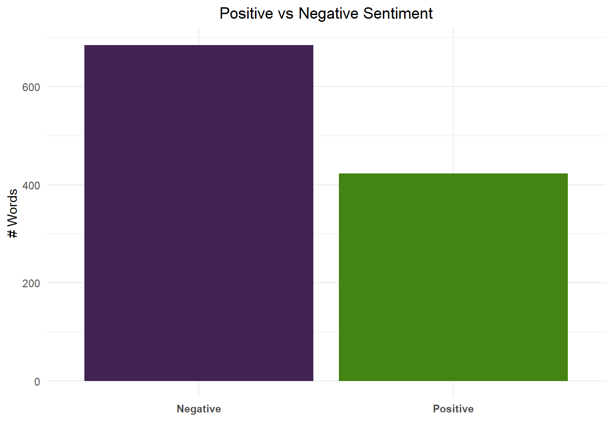

library(dplyr)
library(tidytext)
library(tidyr)
library(ggplot2)
library(textdata) #sentiment lexicons for word classification and analysis
library(gutenbergr) #provides public domain works
library(wordcloud2) #to help us create a wordcloudAll About Data Assignment
Introduction
In this exercise, we will utilize the Gutenberg Project library to extract text from public domain works. Our objective is to analyze complex data, such as text, and create visualizations, such as word clouds and bar plots, to gain deeper insights into the vocabulary and themes present in these public domain works. Below, I’ll provide more details on using a lexicon package for sentiment analysis.
Loading Libraries
Loading Data
As previously mentioned, we are utilizing the gutenbergr library to extract public domain works. The following code demonstrates how we can download works by the author Lodovico Ariosto, chosen randomly. We will proceed by selecting and downloading one of his works to extract its text.
Downloading work based on their gutenberg ID
l_text = gutenberg_download(615) %>% #downloading and selecting only the text
select(text)Basic Discovery
Data Class
The class for our new variable containing the author’s work is a data.frame.
class(l_text)[1] "tbl_df" "tbl" "data.frame"Data Summary
The new variable contains characters and its length is 48,932 observations with only one variable.
summary(l_text) text
Length:48932
Class :character
Mode :character Review Data
This is just a quick example of what the observations in this new variable look like.
head(l_text, 10)# A tibble: 10 × 1
text
<chr>
1 "Orlando Furioso"
2 ""
3 "(\"Orlando Enraged\")"
4 ""
5 ""
6 "By"
7 ""
8 "Ludovico Ariosto"
9 ""
10 "(1474-1533)" Data Cleaning
Tokenize
In the initial stage, we tokenize the text to facilitate easier analysis by breaking it down into individual words and creating a new row for each word. After tokenizing the text, we group each word to display its frequency within the text.
token_text = l_text %>%
unnest_tokens(word, text) %>% #tokenize
count(word, sort = TRUE) #counting frequency of wordsOutput for token_text variable
In this code snippet, we observe the top 10 words after we tokenize the text. It’s evident that these words are stop words, which typically lack significant meaning or insights. Our next step will be to remove these stop words to proceed with our analysis.
head(token_text,10)# A tibble: 10 × 2
word n
<chr> <int>
1 the 16563
2 and 12447
3 to 7625
4 in 5309
5 of 5093
6 his 5030
7 that 4803
8 he 4340
9 with 4014
10 a 3567Filtering Stop Words
After applying the stop word filter, the remaining words appear more significant. This filtering process can assist in identifying the most common words, and enhancing our understanding of the most common vocabulary used throughout the text.
clean_text = token_text %>% #passing the tokenized variable to filter
filter(!word %in% stop_words$word) %>% #filtering stop words
arrange(desc(n)) #descending sort
head(clean_text, 10)# A tibble: 10 × 2
word n
<chr> <int>
1 king 636
2 rogero 585
3 thou 528
4 knight 507
5 fair 506
6 day 493
7 love 410
8 thy 410
9 thee 408
10 arms 366Filtering for Positive Words
We will now utilize the textdata package, which provides diverse lexicons and labeled text datasets for classification and analysis purposes. This package will enable us to examine the cleaned text from earlier and identify all positive and negative words. Using this library simplifies the identification of these words, but its drawback lies in limited flexibility and potential omissions.
afinn = get_sentiments("afinn") #found this lexicon for sentiment analysis
positive_text = clean_text %>%
inner_join(afinn) %>% #joining the lexicon with our clean data
filter(value > 0) %>% #filter words that a negative value which mean their sentiment is negative
arrange(desc(value)) #Arrange by descending frequency
head(positive_text, 10) # View top positive words# A tibble: 10 × 3
word n value
<chr> <int> <dbl>
1 win 39 4
2 heavenly 23 4
3 rejoiced 19 4
4 rejoicing 11 4
5 wins 10 4
6 miracle 9 4
7 triumph 7 4
8 winning 6 4
9 triumphant 5 4
10 rejoice 4 4Filtering for Negative Words
afinn = get_sentiments("afinn") #found this lexicon for sentiment analysis
negative_text = clean_text %>%
inner_join(afinn) %>% #joining the lexicon with our clean data
filter(value < 0) %>% #filter words that have a positive value which mean their sentiment is positive
arrange(desc(n)) #Arrange by descending frequencyJoining with `by = join_by(word)`head(negative_text, 10) # View top negative words# A tibble: 10 × 3
word n value
<chr> <int> <dbl>
1 ill 353 -2
2 sore 260 -1
3 death 219 -2
4 cruel 212 -3
5 fight 199 -1
6 bore 198 -2
7 fear 198 -2
8 pain 190 -2
9 evil 165 -3
10 cried 157 -2List of Words with their Sentiment
The following code helps us generate a data frame displaying the counts of positive and negative words. This data will be used to create a bar chart illustrating the disparity in counts between the two sentiments. This code resembles the previous example but introduces a new column to aggregate the total counts of positive and negative words.
afinn = get_sentiments("afinn") #found this lexicon for sentiment analysis
word_sentiment = clean_text %>% #creating variable for all words that have a sentiment
inner_join(afinn) %>% #joining the lexicon with our clean data
mutate(sentiment = case_when(value >= 1 ~ "Positive",
value <= -1 ~"Negative")) %>% #creating label based on value
count(sentiment)Joining with `by = join_by(word)`head(word_sentiment)# A tibble: 2 × 2
sentiment n
<chr> <int>
1 Negative 685
2 Positive 423Word Clouds
Positive Word Cloud
Generating a word cloud does not provide insight into the overall sentiment and may not contribute significantly to analysis. However, it offers an intriguing method to visualize the most frequent words in a text.
positive_cloud = positive_text %>%
select(word, n) %>%
arrange(desc(n)) # Arrange by descending sentiment value (if needed)
positive_cloudF <- wordcloud2(data = positive_cloud, size = 1.25, backgroundColor = "white") # Convert to HTML widget for use with ggplot2
positive_cloudFNegative Word Cloud
This negative word cloud helps visualize the most frequently used words in the text, highlighting the darker tone of the content.
negative_cloud = negative_text %>%
select(word, n) %>%
arrange(desc(n)) # Arrange by descending sentiment value (if needed)
negative_cloudF <- wordcloud2(data = negative_cloud, size = 1.25, backgroundColor = "white") # Convert to HTML widget for use with ggplot2
negative_cloudFAll Text Word Cloud
In the word cloud below, I’m using the entire cleaned text (excluding stop words) to visualize the most frequent words, disregarding their sentiment values.
all_cloud = clean_text %>%
select(word, n) %>%
arrange(desc(n)) # Arrange by descending sentiment value (if needed)
all_cloudF <- wordcloud2(data = all_cloud, size = 1.25, backgroundColor = "white") # Convert to HTML widget for use with ggplot2
all_cloudFAdditional Plots
Lastly, I wanted to visualize a straightforward bar chart comparing the frequency of positive words to negative words, revealing a huge difference between the two sentiments in the text. It’s worth noting that the lexicon package utilized has a limited word set, which may influence the accuracy of these findings.”
ggplot(word_sentiment, aes(x = sentiment, y = n, fill = sentiment)) +
geom_bar(stat = "identity") +
labs(title = "Positive vs Negative Sentiment", x = "", y = "# Words") +
scale_fill_manual(values = c("Positive" = "#448412", "Negative" = "#412354"), guide = FALSE) + #choosing colors at random
theme_minimal() +
theme(plot.title = element_text(hjust = 0.5), axis.text.x = element_text(face = "bold")) #adjusting title to the middle and bolding x axis labels